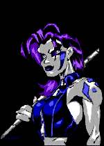

New #ansi
Plagued by ops that didn't draw, egotistical
newbies, and an immature attitude, #ansi has been
peacefully taken over by a group who want things to change. At
one point an integral part of the ansi/art scene, the new group
hope to make it so once again. by
Wizy read the
article
Defacto2 changes direction
Defacto2 morphs from magazine to museum.
According to Ipggi "www.defacto2.org is the only
page/museum in the world strictly for the PC scene." Find
out about what's planned and how you can help. by Ipggi read the article
The Promise of International
Ansi
BBS's with their tightly
defined geography are gone, and in their place has risen a new
kind of ansi. The audience and the groups have both
become international, which promises to keep ansi strong for
a long time to come. by hennifer read the article
Forbes
looks at the warez scene
After the Wired article proclaiming
newsgroups a warez heaven, we were skeptical of an article on "the
scene" in a business magazine. Surprisingly,
Adam L. Penenberg seems to have done his homework. read the article
|

CIA Productions is coming closer and closer to its 50th
official art pack release. The group is seeking contributions
from ANYONE who works in ansi, ascii, rip, vga, code, etc to
help make CIA PACK #50 the best art pack EVER
find out more |